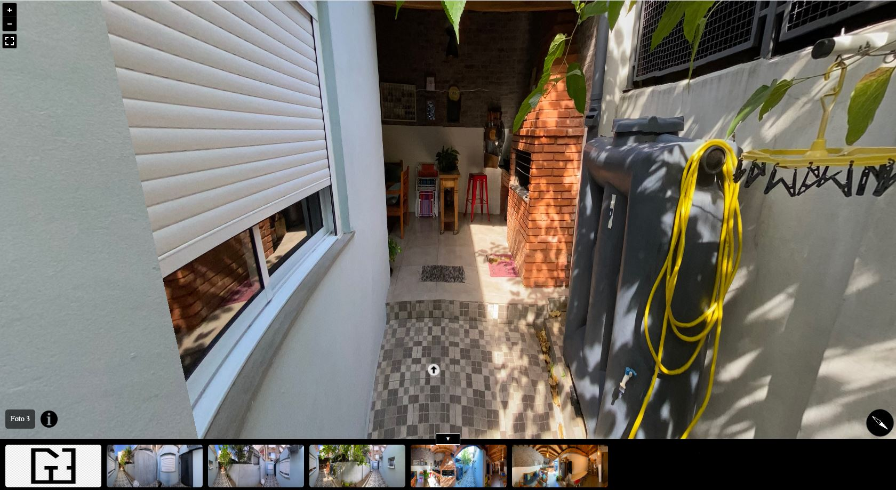
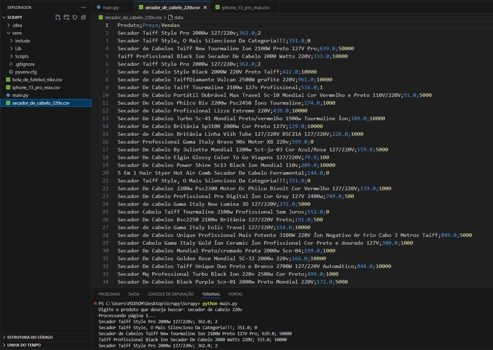
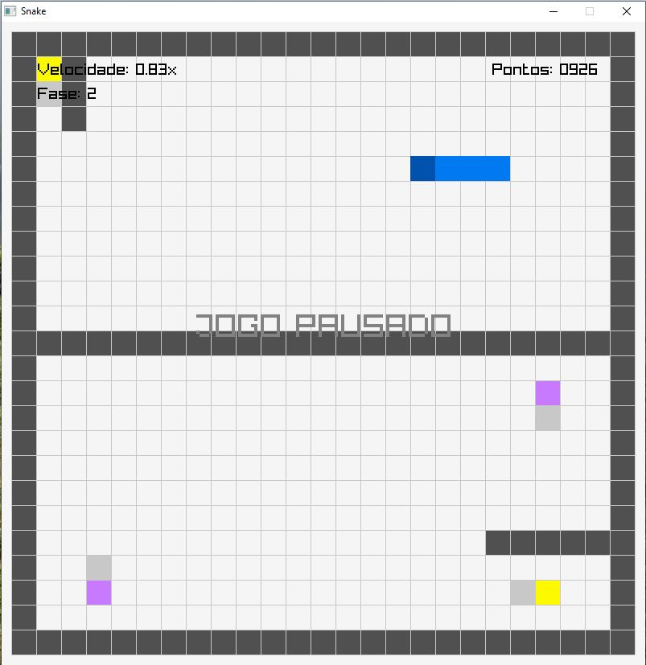

01
Sites institucionais
Desenvolvimento de sites profissionais, responsivos e organizados, com páginas internas, componentes reutilizáveis e estrutura pensada para evolução.
Desenvolvedor Web • Sites • Landing Pages • AWS
Sou Ricardo Chaves, estudante de Ciência da Computação na UFRGS e desenvolvedor web com experiência em projetos completos: planejamento, front-end, integrações, área administrativa, publicação em AWS e manutenção contínua.
Atuo no desenvolvimento de sites, landing pages e soluções web para empresas que precisam de presença digital profissional, páginas bem estruturadas e processos mais organizados. Tenho experiência criando projetos desde a etapa inicial de planejamento até a publicação, configuração de domínio, hospedagem, formulários, ajustes pós-lançamento e manutenção.
Além do front-end, também desenvolvo recursos de apoio como portais administrativos para publicação de posts, edição de conteúdos e alterações em páginas. No backend e infraestrutura, trabalho com serviços da AWS, incluindo S3, CloudFront, Lambda, SES e configurações relacionadas à publicação de aplicações web.
Tenho boa visão de negócio por já ter atuado com atendimento, gestão comercial, marketing digital e resolução de problemas com clientes. Isso me ajuda a desenvolver páginas pensando não apenas no código, mas também na clareza da oferta, experiência do usuário, conversão e manutenção do projeto.
Desenvolvimento de sites profissionais, responsivos e organizados, com páginas internas, componentes reutilizáveis e estrutura pensada para evolução.
Criação de páginas focadas em campanha, captação de leads, apresentação de produtos, serviços ou ofertas específicas.
Desenvolvimento de áreas administrativas para publicação de posts, gerenciamento de conteúdo e ajustes em páginas do site.
Publicação e configuração de projetos com S3, CloudFront, Lambda, SES, domínios, certificados e invalidação de cache.
Desenvolvimento de páginas institucionais e comerciais com estrutura responsiva, componentes reutilizáveis, formulários, integrações, publicação e ajustes de produção.

Desenvolvimento de estrutura administrativa para publicação de posts de blog, edição de conteúdos e apoio à manutenção do site.

Sistema em Node.js para criação de páginas estáticas a partir de dados estruturados, com templates, URLs amigáveis, sitemap e organização voltada para projetos de grande volume.

Tour interativo com fotos panorâmicas, navegação por hotspots, cenas conectadas e interface web para experiência imersiva.

Scripts em Python para coleta, organização e exportação de dados, com foco em ganho de produtividade e apoio à análise de informações.

Jogo 2D desenvolvido em C com Raylib, incluindo movimentação, colisões, pontuação, controle de velocidade e fases personalizadas.

Cursando 3º semestre.
Curso iniciado antes da transferência para Ciência da Computação.
Inglês avançado. Espanhol intermediário.
Estou aberto a oportunidades em agências e projetos de desenvolvimento web, especialmente sites, landing pages, manutenção, admin/blog e publicação em AWS.